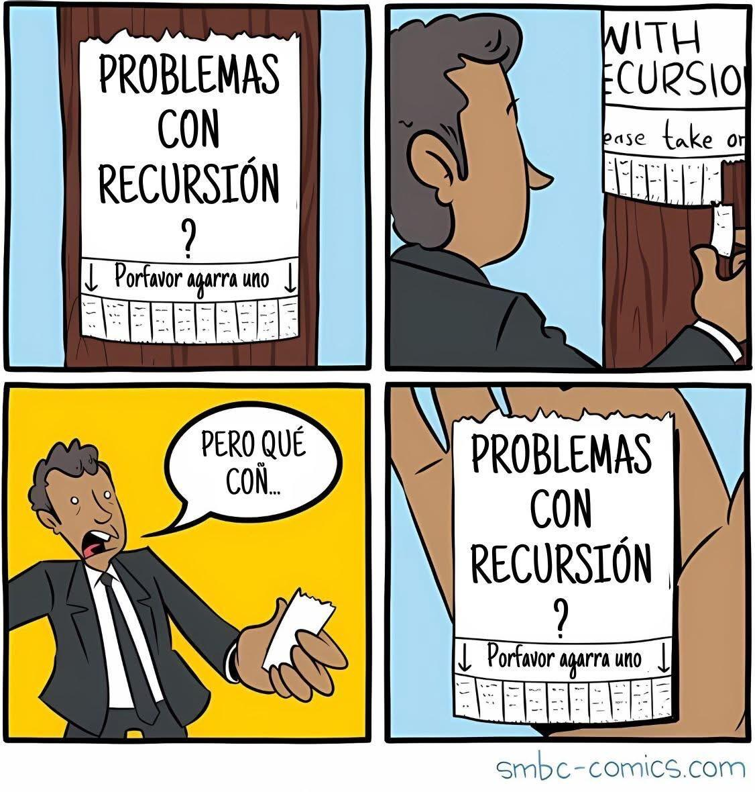

<!DOCTYPE html>
<html lang="en">
  <head>
    <meta charset="utf-8" />
    <meta name="viewport" content="width=device-width, initial-scale=1.0, maximum-scale=1.0, user-scalable=no" />

    <title></title>
    <link rel="stylesheet" href="dist/reveal.css" />
    <link rel="stylesheet" href="dist/theme/iph.css" id="theme" />
    <link rel="stylesheet" href="plugin/highlight/spyder.css" />
	<link rel="stylesheet" href="css/layout.css" />
	<link rel="stylesheet" href="plugin/customcontrols/style.css">


    <script defer src="dist/fontawesome/all.min.js"></script>

	<script type="text/javascript">
		var forgetPop = true;
		function onPopState(event) {
			if(forgetPop){
				forgetPop = false;
			} else {
				parent.postMessage(event.target.location.href, "app://obsidian.md");
			}
        }
		window.onpopstate = onPopState;
		window.onmessage = event => {
			if(event.data == "reload"){
				window.document.location.reload();
			}
			forgetPop = true;
		}

		function fitElements(){
			const itemsToFit = document.getElementsByClassName('fitText');
			for (const item in itemsToFit) {
				if (Object.hasOwnProperty.call(itemsToFit, item)) {
					var element = itemsToFit[item];
					fitElement(element,1, 1000);
					element.classList.remove('fitText');
				}
			}
		}

		function fitElement(element, start, end){

			let size = (end + start) / 2;
			element.style.fontSize = `${size}px`;

			if(Math.abs(start - end) < 1){
				while(element.scrollHeight > element.offsetHeight){
					size--;
					element.style.fontSize = `${size}px`;
				}
				return;
			}

			if(element.scrollHeight > element.offsetHeight){
				fitElement(element, start, size);
			} else {
				fitElement(element, size, end);
			}		
		}


		document.onreadystatechange = () => {
			fitElements();
			if (document.readyState === 'complete') {
				if (window.location.href.indexOf("?export") != -1){
					parent.postMessage(event.target.location.href, "app://obsidian.md");
				}
				if (window.location.href.indexOf("print-pdf") != -1){
					let stateCheck = setInterval(() => {
						clearInterval(stateCheck);
						window.print();
					}, 250);
				}
			}
	};


        </script>
  </head>
  <body>
    <div class="reveal">
      <div class="slides"><section  data-markdown><script type="text/template"><!-- .slide: class="has-light-background drop" data-background-color="#f8f8f8" -->
<div class="" style="position: absolute; left: 0px; top: 0px; height: 700px; width: 960px; min-height: 700px; display: flex; flex-direction: column; align-items: center; justify-content: center" absolute="true">

### <i class="fas fa-award"></i> IP Honores

 ####  *Buenas Prácticas de N3*

[Eduardo Rosales](mailto:ee.rosales24@uniandes.edu.co)

Departamento de Ingeniería de Sistemas y Computación

Universidad de los Andes
</div></script></section><section  data-markdown><script type="text/template"><!-- .slide: class="has-light-background drop" data-background-color="#f8f8f8" -->
<div class="" style="position: absolute; left: 0px; top: 0px; height: 700px; width: 960px; min-height: 700px; display: flex; flex-direction: column; align-items: center; justify-content: center" absolute="true">

> "Everyone knows that debugging is twice as hard as writing a program in the first place." 

Brian Kernighan
</div></script></section><section  data-markdown><script type="text/template"><!-- .slide: class="has-light-background drop" data-background-color="#f8f8f8" -->
<div class="" style="position: absolute; left: 0px; top: 0px; height: 700px; width: 960px; min-height: 700px; display: flex; flex-direction: column; align-items: center; justify-content: center" absolute="true">

### Índice

- [Definir el caso base](https://eerosales24.github.io/iph_2026_20/general/buenas_practicas/#/3)

- [Converger al caso base](https://eerosales24.github.io/iph_2026_20/general/buenas_practicas/#/4)

- [Usar una variable de control para `while`](https://eerosales24.github.io/iph_2026_20/general/buenas_practicas/#/6)

- [Usar nombres de variables autoexplicativos al iterar](https://eerosales24.github.io/iph_2026_20/general/buenas_practicas/#/9)

- [No remover elementos durante un recorrido](https://eerosales24.github.io/iph_2026_20/general/buenas_practicas/#/12)

- [Validaciones seguras de métodos de `list`](https://eerosales24.github.io/iph_2026_20/general/buenas_practicas/#/15)

- [Evitar pasar y modificar mutables en funciones](https://eerosales24.github.io/iph_2026_20/general/buenas_practicas/#/20)

- [Evitar uso innecesario de `readline()`](https://eerosales24.github.io/iph_2026_20/general/buenas_practicas/#/22)

- [Acceder de forma segura a estructuras compuestas](https://eerosales24.github.io/iph_2026_20/general/buenas_practicas/#/23)

- [Usar `for-in` cuando no se necesite procesar índices](https://eerosales24.github.io/iph_2026_20/general/buenas_practicas/#/28)

- [Usar el patrón de recorrido adecuado](https://eerosales24.github.io/iph_2026_20/general/buenas_practicas/#/29)

- [Nunca interrumpir un ciclo](https://eerosales24.github.io/iph_2026_20/general/buenas_practicas/#/30)
</div></script></section><section  data-markdown><script type="text/template"><!-- .slide: class="has-light-background drop" data-background-color="#f8f8f8" -->
<div class="" style="position: absolute; left: 0px; top: 0px; height: 700px; width: 960px; min-height: 700px; display: flex; flex-direction: column; align-items: center; justify-content: center" absolute="true">

### Definir el caso base

- El caso base → obligatorio:
	- Detiene la recursión
	
- Puede haber uno o múltiples
	- Casos base

- El caso base evita
	- Una **recursión infinita**
		- Provoca [RecursionError](https://eerosales24.github.io/iph_2026_20/general/errores_comunes/#/42)
</div></script></section><section  data-markdown><script type="text/template"><!-- .slide: class="has-light-background drop" data-background-color="#f8f8f8" -->
<div class="" style="position: absolute; left: 0px; top: 0px; height: 700px; width: 960px; min-height: 700px; display: flex; flex-direction: column; align-items: center; justify-content: center" absolute="true">

### Converger al caso base (1/2)

- Toda función recursiva debe estar diseñada 
	- Para que cada llamada 
		- Avance hacia → El caso base

<br>

- Si hay múltiples casos recursivos, deben ser disyuntos
	- Y todos deben converger →  Caso base
</div></script></section><section  data-markdown><script type="text/template"><!-- .slide: class="has-light-background drop" data-background-color="#f8f8f8" -->
<div class="" style="position: absolute; left: 0px; top: 0px; height: 700px; width: 960px; min-height: 700px; display: flex; flex-direction: column; align-items: center; justify-content: center" absolute="true">

### Converger al caso base (2/2)


- Si no hay avance hacia el o los → casos base
	- La recursión puede ser infinita ([RecursionError](https://eerosales24.github.io/iph_2026_20/general/errores_comunes/#/42))



</div></script></section><section  data-markdown><script type="text/template"><!-- .slide: class="has-light-background drop" data-background-color="#f8f8f8" -->
<div class="" style="position: absolute; left: 0px; top: 0px; height: 700px; width: 960px; min-height: 700px; display: flex; flex-direction: column; align-items: center; justify-content: center" absolute="true">

### Usar una variable de control para `while` (1/3)

- Toda instrucción `while` debe tener **una variable de control** que:
	1. Se inicialice correctamente
	2.  Se actualice dentro del cuerpo del ciclo
	3.  **Termine el ciclo**
	- Ej:
```python
i = 0
while i < 5:
    print(i)
    i += 1  # Actualización que terminará el ciclo
```
</div></script></section><section  data-markdown><script type="text/template"><!-- .slide: class="has-light-background drop" data-background-color="#f8f8f8" -->
<div class="" style="position: absolute; left: 0px; top: 0px; height: 700px; width: 960px; min-height: 700px; display: flex; flex-direction: column; align-items: center; justify-content: center" absolute="true">

### Usar una variable de control para `while` (2/3)

- Si la variable de control no termina el ciclo
	- El ciclo podría ejecutarse indefinidamente
		- Y podría lanzarse un [`MemoryError`](https://docs.python.org/3/library/exceptions.html#MemoryError) o un [OverflowError](https://docs.python.org/3/library/exceptions.html#OverflowError)
	- Ej:
```python
i = 0
while i >= 0:
    print(i)
    # Este incremento erróneo de la variable de control
    # Impide que el ciclo termine
    # i siempre será mayor o igual a 0
    i += 999_999_999
```
</div></script></section><section  data-markdown><script type="text/template"><!-- .slide: class="has-light-background drop" data-background-color="#f8f8f8" -->
<div class="" style="position: absolute; left: 0px; top: 0px; height: 700px; width: 960px; min-height: 700px; display: flex; flex-direction: column; align-items: center; justify-content: center" absolute="true">

### Usar una variable de control para `while` (3/3)

- Todo `while` debe estar diseñado para que eventualmente:
    - Su condición evalúe a `False`
		- Para prevenir bucles infinitos accidentales
- Este es un ejemplo en donde la variable de control no cumple ningún propósito:
```python
i = 0 
while True:  # Ciclo infinito
    print(i) # i nunca se cambia
```
</div></script></section><section  data-markdown><script type="text/template"><!-- .slide: class="has-light-background drop" data-background-color="#f8f8f8" -->
<div class="" style="position: absolute; left: 0px; top: 0px; height: 700px; width: 960px; min-height: 700px; display: flex; flex-direction: column; align-items: center; justify-content: center" absolute="true">

### Usar nombres de variables autoexplicativos al iterar (1/3)

- El identificador que representa el elemento actual debe ser **descriptivo**
	- Y no confundirse con el del iterable
- Ejemplos:
    
    - `for` **`letra`** `in palabra:`
    - `for` **`caracter`** `in cadena:`
    - `for` **`caracter_actual`** `in caracteres:`
    - `for` **`numero`**  `in lista:`
    - `for` **`numero_actual`**  `in numeros:`
</div></script></section><section  data-markdown><script type="text/template"><!-- .slide: class="has-light-background drop" data-background-color="#f8f8f8" -->
<div class="" style="position: absolute; left: 0px; top: 0px; height: 700px; width: 960px; min-height: 700px; display: flex; flex-direction: column; align-items: center; justify-content: center" absolute="true">

### Usar nombres de variables autoexplicativos al iterar (2/3)

- El identificador de un iterable idealmente debe estar en plural

	<br>

- ✅ Claro:
```python
nombres = ['Ana', 'Luis', 'Carlos']
```

-  ❌ Confuso:
```python
nombre = ['Ana', 'Luis', 'Carlos'] 
```

	<br> 
- Hay nombres de iterables que ya indican plural:

- ✅ Claro:
```python
directorio = {
    'Ana': 32484650981,
    'Luis': 31234569792
}
```
</div></script></section><section  data-markdown><script type="text/template"><!-- .slide: class="has-light-background drop" data-background-color="#f8f8f8" -->
<div class="" style="position: absolute; left: 0px; top: 0px; height: 700px; width: 960px; min-height: 700px; display: flex; flex-direction: column; align-items: center; justify-content: center" absolute="true">

### Usar nombres de variables autoexplicativos al iterar (3/3)

- El identificador que representa al iterable debe ser **descriptivo**
- Ejemplos:
    

    - `for` caracter_actual in **`caracteres`**`:`
    - `for` factura_actual  in **`facturas`**`:`
    - `for` numero_actual  in **`numeros`**`:`

	<br>

- Nombres de iterables que ya indican plural:

    - `for` persona in **`directorio`**`:`
    - `for` articulo in **`catalogo`**`:`
</div></script></section><section  data-markdown><script type="text/template"><!-- .slide: class="has-light-background drop" data-background-color="#f8f8f8" -->
<div class="" style="position: absolute; left: 0px; top: 0px; height: 700px; width: 960px; min-height: 700px; display: flex; flex-direction: column; align-items: center; justify-content: center" absolute="true">

### No remover elementos durante un recorrido (1/3)

- Cambiar la longitud del iterable 
	- Mientras se recorre puede causar errores o resultados inesperados
	- Ej:
	
```python
lista = [1, 2, 3, 4, 5]

for x in lista:
    if x != 5:
        print(f'Removiendo: {x}')
        lista.remove(x)

print('Resultado:', lista)
```


```plaintext
Removiendo: 1
Removiendo: 3
Resultado: [2, 4, 5]
```
</div></script></section><section  data-markdown><script type="text/template"><!-- .slide: class="has-light-background drop" data-background-color="#f8f8f8" -->
<div class="" style="position: absolute; left: 0px; top: 0px; height: 700px; width: 960px; min-height: 700px; display: flex; flex-direction: column; align-items: center; justify-content: center" absolute="true">

### No remover elementos durante un recorrido (2/3)

```python
lista = [1, 2, 3, 4, 5]

for x in lista:
    if x != 5:
        print(f'Removiendo: {x}')
        lista.remove(x)

print('Resultado:', lista)
```

-  `for` avanza por índices internos, pero al eliminar un elemento:
    - Los elementos se "corren" hacia la izquierda
    - Se **saltan elementos** sin procesar (Ej: `2` y `4`)
        
- Resultado:
	- Quedan en la lista elementos que **no fueron eliminados**
</div></script></section><section  data-markdown><script type="text/template"><!-- .slide: class="has-light-background drop" data-background-color="#f8f8f8" -->
<div class="" style="position: absolute; left: 0px; top: 0px; height: 700px; width: 960px; min-height: 700px; display: flex; flex-direction: column; align-items: center; justify-content: center" absolute="true">

### No remover elementos durante un recorrido (3/3)

- Forma correcta
	- Recorrer una **copia** de la lista:

```python
lista = [1, 2, 3, 4, 5]

for x in lista[:]:  # Copia de la lista
    if x != 5:
        print(f'Removiendo: {x}')
        lista.remove(x)

print('Resultado:', lista)  # → Resultado: [5]
```

- Nota: Si se requiere eliminar todos los elementos
	- Se debería usar:  **`list.clear()`**
</div></script></section><section  data-markdown><script type="text/template"><!-- .slide: class="has-light-background drop" data-background-color="#f8f8f8" -->
<div class="" style="position: absolute; left: 0px; top: 0px; height: 700px; width: 960px; min-height: 700px; display: flex; flex-direction: column; align-items: center; justify-content: center" absolute="true">

### Validaciones seguras de métodos de `list` (1/5)

- Considerar que algunos métodos de `list` 
	- Que generar errores cuando  
		- El elemento no está en la lista
		- Y/o la lista está vacía
		- Ej:
		
```python
[].index('x')  # → ValueError: 'x' is not in list

[].remove('x')  # → ValueError: list.remove(x): x not in list

[].pop()  # → IndexError: pop from empty list

[].pop(0)  # → IndexError: pop index out of range
```
</div></script></section><section  data-markdown><script type="text/template"><!-- .slide: class="has-light-background drop" data-background-color="#f8f8f8" -->
<div class="" style="position: absolute; left: 0px; top: 0px; height: 700px; width: 960px; min-height: 700px; display: flex; flex-direction: column; align-items: center; justify-content: center" absolute="true">

### Validaciones seguras de métodos de `list` (2/5)

- Para evitar estos errores
	- Se recomienda validar antes si el elemento existe y/o no está vacía
	- Ej:
	
```python
if item in lista:
    posicion = lista.index(item)
```

```python
if item in lista:
    lista.remove(item)
```

```python
if lista != []:
    item = lista.pop()
```

```python
if i < len(lista):
    lista.pop(i)
```
</div></script></section><section  data-markdown><script type="text/template"><!-- .slide: class="has-light-background drop" data-background-color="#f8f8f8" -->
<div class="" style="position: absolute; left: 0px; top: 0px; height: 700px; width: 960px; min-height: 700px; display: flex; flex-direction: column; align-items: center; justify-content: center" absolute="true">

### Validaciones seguras de métodos de `list` (3/5)

- `list.insert()`
	- No genera error con la lista vacía
		- Inserta en la única posición que tendrá la lista

```python
lista = []

lista.insert(10_000, 'x')  # → ['x']
```
</div></script></section><section  data-markdown><script type="text/template"><!-- .slide: class="has-light-background drop" data-background-color="#f8f8f8" -->
<div class="" style="position: absolute; left: 0px; top: 0px; height: 700px; width: 960px; min-height: 700px; display: flex; flex-direction: column; align-items: center; justify-content: center" absolute="true">

### Validaciones seguras de métodos de `list` (4/5)

- `list.sort()`
	- No genera error con la lista vacía
		- No se ordena nada

```python
lista = []

lista.sort()  # → []
```
</div></script></section><section  data-markdown><script type="text/template"><!-- .slide: class="has-light-background drop" data-background-color="#f8f8f8" -->
<div class="" style="position: absolute; left: 0px; top: 0px; height: 700px; width: 960px; min-height: 700px; display: flex; flex-direction: column; align-items: center; justify-content: center" absolute="true">

### Validaciones seguras de métodos de `list` (5/5)

- `list.sort()`
	- En general no se debe usar con distintos tipos de datos

```python
[1, 'a'].sort()  
# → TypeError: '<' not supported between instances of 'str' and 'int'
```
</div></script></section><section  data-markdown><script type="text/template"><!-- .slide: class="has-light-background drop" data-background-color="#f8f8f8" -->
<div class="" style="position: absolute; left: 0px; top: 0px; height: 700px; width: 960px; min-height: 700px; display: flex; flex-direction: column; align-items: center; justify-content: center" absolute="true">

### Evitar pasar y modificar mutables en funciones (1/2)

- Evitar pasar mutables (Ej: listas o diccionarios) como argumentos
	- A no ser que se necesite 
		- Dado el propósito de la función

```python
procesar_datos(datos.copy())  # En lugar de procesar_datos(datos)
```

-  Es preferible pasar una copia a la función
	- Evitando posibles modificaciones indeseadas
</div></script></section><section  data-markdown><script type="text/template"><!-- .slide: class="has-light-background drop" data-background-color="#f8f8f8" -->
<div class="" style="position: absolute; left: 0px; top: 0px; height: 700px; width: 960px; min-height: 700px; display: flex; flex-direction: column; align-items: center; justify-content: center" absolute="true">

### Evitar pasar y modificar mutables en funciones (2/2)

- Evitar modificar mutables dentro de una función
	- A no ser que se necesite 
		- Dado el propósito de la función


```python
def procesar_sin_modificar(data: list) -> list:
    # Hacer una copia para evitar modificar la lista:
    copia = data.copy()
    # trabajar sobre copia
```
</div></script></section><section  data-markdown><script type="text/template"><!-- .slide: class="has-light-background drop" data-background-color="#f8f8f8" -->
<div class="" style="position: absolute; left: 0px; top: 0px; height: 700px; width: 960px; min-height: 700px; display: flex; flex-direction: column; align-items: center; justify-content: center" absolute="true">

### Evitar uso innecesario de `readline()`

- Evitar el uso innecesario de `readline()` en ciclos
	- Preferir iterar directamente sobre el archivo usando `for`

<br>

-  ❌ Innecesario:

```python
linea = archivo.readline()
while linea != '':
    print(linea)
    linea = archivo.readline()
```

<br>

-  ✅ Más claro y eficiente:

```python
with open('archivo.txt', 'r', encoding='utf-8') as archivo:
    for linea in archivo:
        print(linea)
```
</div></script></section><section  data-markdown><script type="text/template"><!-- .slide: class="has-light-background drop" data-background-color="#f8f8f8" -->
<div class="" style="position: absolute; left: 0px; top: 0px; height: 700px; width: 960px; min-height: 700px; display: flex; flex-direction: column; align-items: center; justify-content: center" absolute="true">

### Acceder de forma segura a estructuras compuestas (1/5)

- Al acceder a una estructura compuesta
	- Asegurarse que el acceso sea seguro
- El objetivo es evitar errores como:
	- <a href="https://eerosales24.github.io/iph_2026_20/general/errores_comunes/#/37" target="_blank" rel="noopener noreferrer">KeyError</a>
</div></script></section><section  data-markdown><script type="text/template"><!-- .slide: class="has-light-background drop" data-background-color="#f8f8f8" -->
<div class="" style="position: absolute; left: 0px; top: 0px; height: 700px; width: 960px; min-height: 700px; display: flex; flex-direction: column; align-items: center; justify-content: center" absolute="true">

### Acceder de forma segura a estructuras compuestas (2/5)

- Ejemplo con un diccionario de diccionarios:

```python
directorio = {
    'Luis': {'celular': '311 986 47 00', 'email': 'luis@hotmail.com'},
    'Ana': {'celular': '320 700 62 15', 'email': 'ana@yahoo.com'}
}
```

- ❌ Error común (cuando una llave no existe):

```python
print(directorio['Pedro']['celular'])  # → KeyError
```

- ✅ Solución segura:

```python
if 'Pedro' in directorio and 'celular' in directorio['Pedro']:
    print(directorio['Pedro']['celular'])
else:
    print('Contacto o celular no disponible.')
```
</div></script></section><section  data-markdown><script type="text/template"><!-- .slide: class="has-light-background drop" data-background-color="#f8f8f8" -->
<div class="" style="position: absolute; left: 0px; top: 0px; height: 700px; width: 960px; min-height: 700px; display: flex; flex-direction: column; align-items: center; justify-content: center" absolute="true">

### Acceder de forma segura a estructuras compuestas (3/5)

- Ejemplo con un diccionario de listas:

```python
inscripciones = {
    'Matemáticas': ['Ana', 'Luis'],
    'Historia': ['Pedro', 'Sofía']
}
```

- ❌ Error común (cuando una llave no existe):

```python
for estudiante in inscripciones['Física']:  # → KeyError
    print(estudiante)
```

- ✅ Solución segura:

```python
if 'Física' in inscripciones:
    for estudiante in inscripciones['Física']:
        print(estudiante)
else:
    print('No hay inscripciones registradas para Física.')

```
</div></script></section><section  data-markdown><script type="text/template"><!-- .slide: class="has-light-background drop" data-background-color="#f8f8f8" -->
<div class="" style="position: absolute; left: 0px; top: 0px; height: 700px; width: 960px; min-height: 700px; display: flex; flex-direction: column; align-items: center; justify-content: center" absolute="true">

### Acceder de forma segura a estructuras compuestas (4/5)

- Ejemplo con un diccionario de listas de diccionarios:

```python
vuelos_por_origen = {
    'Bogotá': [
        {'destino': 'Medellín', 'duracion': 60},
        {'destino': 'Cali', 'duracion': 70}
    ],
    'Cartagena': [
        {'destino': 'Barranquilla', 'duracion': 40}
    ]
}
```

- ❌ Error común (cuando una llave no existe):

```python
for vuelo in vuelos_por_origen['Cúcuta']:  # → KeyError no hay vuelos desde 'Cúcuta'
    print(vuelo['destino'])
```

- ✅ Solución segura:

```python
origen = 'Cúcuta'

if origen in vuelos_por_origen:
    for vuelo in vuelos_por_origen[origen]:
        print(vuelo['destino'])
else:
    print(f'No hay vuelos registrados desde {origen}.')
```
</div></script></section><section  data-markdown><script type="text/template"><!-- .slide: class="has-light-background drop" data-background-color="#f8f8f8" -->
<div class="" style="position: absolute; left: 0px; top: 0px; height: 700px; width: 960px; min-height: 700px; display: flex; flex-direction: column; align-items: center; justify-content: center" absolute="true">

### Acceder de forma segura a estructuras compuestas (5/5)

- Cuando sea posible
	- Usar el método `get()` para evitar errores de llave y 
		- Para proporcionar valores por defecto
	- Ej:

```python
directorio = {
    'Luis': {'celular': '311 986 47 00', 'email': 'luis@hotmail.com'},
    'Ana': {'celular': '320 700 62 15', 'email': 'ana@yahoo.com'}
}
```

```python
email = directorio.get('Maria', {}).get('email', 'No disponible')
# → 'No disponible'
```
</div></script></section><section  data-markdown><script type="text/template"><!-- .slide: class="has-light-background drop" data-background-color="#f8f8f8" -->
<div class="" style="position: absolute; left: 0px; top: 0px; height: 700px; width: 960px; min-height: 700px; display: flex; flex-direction: column; align-items: center; justify-content: center" absolute="true">

### Usar `for-in` cuando no se necesite procesar índices


- Es preferible usar `for-in` cuando no se requiere acceder por índice
	- Es más legible
	- Evita errores con el control de índice y 
	- Reduce código innecesario

<br>

- ❌ Evitable si no se necesita el índice:

```python
i = 0
while i < len(texto):
    ...
    i += 1
```

<br>

- ✅ Mejor opción:

```python
for letra_actual in texto:
    ...
```
</div></script></section><section  data-markdown><script type="text/template"><!-- .slide: class="has-light-background drop" data-background-color="#f8f8f8" -->
<div class="" style="position: absolute; left: 0px; top: 0px; height: 700px; width: 960px; min-height: 700px; display: flex; flex-direction: column; align-items: center; justify-content: center" absolute="true">

### Usar  el patrón de recorrido adecuado

- Usar el patrón de recorrido total
	- **Únicamente** si se necesita procesar todos los elementos
		- Caso contrario
			- Usar un **patrón de recorrido parcial**
</div></script></section><section  data-markdown><script type="text/template"><!-- .slide: class="has-light-background drop" data-background-color="#f8f8f8" -->
<div class="" style="position: absolute; left: 0px; top: 0px; height: 700px; width: 960px; min-height: 700px; display: flex; flex-direction: column; align-items: center; justify-content: center" absolute="true">

### Nunca interrumpir un ciclo (1/5)

- Cuando se desea recorrer una estructura hasta encontrar una condición
	- En el curso se debe usar el patrón de **recorrido parcial**
		- Este patrón **siempre** se implementa con un ciclo `while`
</div></script></section><section  data-markdown><script type="text/template"><!-- .slide: class="has-light-background drop" data-background-color="#f8f8f8" -->
<div class="" style="position: absolute; left: 0px; top: 0px; height: 700px; width: 960px; min-height: 700px; display: flex; flex-direction: column; align-items: center; justify-content: center" absolute="true">

### Nunca interrumpir un ciclo (2/5)

- Ejemplo correcto – **Con centinela**

```python
def buscar(lista: list, valor: int) -> int:
    i = 0
    posicion = -1
    encontrado = False  # Centinela

    while i < len(lista) and not encontrado:
        if lista[i] == valor:
            encontrado = True
            posicion = i
        i += 1

    return posicion
```

- ✅ No se interrumpe el ciclo con un `return`
- ✅ Se usa una variable de retorno (`resultado`)
</div></script></section><section  data-markdown><script type="text/template"><!-- .slide: class="has-light-background drop" data-background-color="#f8f8f8" -->
<div class="" style="position: absolute; left: 0px; top: 0px; height: 700px; width: 960px; min-height: 700px; display: flex; flex-direction: column; align-items: center; justify-content: center" absolute="true">

### Nunca interrumpir un ciclo (3/5)

- Ejemplo correcto – **Sin centinela**

```python
def buscar(lista: list, valor: int) -> int:
    i = 0
    posicion = -1

    while i < len(lista) and lista[i] != valor:
        i += 1

    if i < len(lista):
        posicion = i

    return posicion
```

- ✅ No se interrumpe el ciclo con un `return`
- ✅ Se usa una variable de retorno (`resultado`)
</div></script></section><section  data-markdown><script type="text/template"><!-- .slide: class="has-light-background drop" data-background-color="#f8f8f8" -->
<div class="" style="position: absolute; left: 0px; top: 0px; height: 700px; width: 960px; min-height: 700px; display: flex; flex-direction: column; align-items: center; justify-content: center" absolute="true">

### Nunca interrumpir un ciclo (4/5)

- Ejemplo **incorrecto** – Interrumpir el ciclo con `return`

```python
def buscar(lista: list, valor: int) -> int:
    for i in range(len(lista)):
        if lista[i] == valor:
            return i
    return -1
```

- ❌ Se interrumpe un condicional con `return`
- ❌ No se usó una variable de retorno
- ❌ Hay más de  un `return` en la función
</div></script></section><section  data-markdown><script type="text/template"><!-- .slide: class="has-light-background drop" data-background-color="#f8f8f8" -->
<div class="" style="position: absolute; left: 0px; top: 0px; height: 700px; width: 960px; min-height: 700px; display: flex; flex-direction: column; align-items: center; justify-content: center" absolute="true">

### Nunca interrumpir un ciclo (5/5)

- En el curso NO se estudian las siguientes instrucciones:
	- ~~`break`~~
	- ~~`continue`~~
	- ~~`exit`~~

- Usar estas instrucciones 
	- O similares
		- para interrumpir condicionales o ciclos
			- Es una **mala práctica de programación**
</div></script></section><section  data-markdown><script type="text/template"><!-- .slide: class="has-light-background drop" data-background-color="#f8f8f8" -->
<div class="" style="position: absolute; left: 0px; top: 0px; height: 700px; width: 960px; min-height: 700px; display: flex; flex-direction: column; align-items: center; justify-content: center" absolute="true">

# Fin de la buenas prácticas de Nivel 3
</div></script></section><section  data-markdown><script type="text/template"><!-- .slide: class="has-light-background drop" data-background-color="#f8f8f8" -->
<div class="" style="position: absolute; left: 0px; top: 0px; height: 700px; width: 960px; min-height: 700px; display: flex; flex-direction: column; align-items: center; justify-content: center" absolute="true">

[<i class="fas fa-home  fa-3x"></i>](https://eerosales24.github.io/iph_2026_20/#)
</div></script></section></div>
    </div>

    <script src="dist/reveal.js"></script>

    <script src="plugin/markdown/markdown.js"></script>
    <script src="plugin/highlight/highlight.js"></script>
    <script src="plugin/zoom/zoom.js"></script>
    <script src="plugin/notes/notes.js"></script>
    <script src="plugin/math/math.js"></script>
	<script src="plugin/mermaid/mermaid.js"></script>
	<script src="plugin/chart/chart.min.js"></script>
	<script src="plugin/chart/plugin.js"></script>
	<script src="plugin/customcontrols/plugin.js"></script>

    <script>
      function extend() {
        var target = {};
        for (var i = 0; i < arguments.length; i++) {
          var source = arguments[i];
          for (var key in source) {
            if (source.hasOwnProperty(key)) {
              target[key] = source[key];
            }
          }
        }
        return target;
      }

	  function isLight(color) {
		let hex = color.replace('#', '');

		// convert #fff => #ffffff
		if(hex.length == 3){
			hex = `${hex[0]}${hex[0]}${hex[1]}${hex[1]}${hex[2]}${hex[2]}`;
		}

		const c_r = parseInt(hex.substr(0, 2), 16);
		const c_g = parseInt(hex.substr(2, 2), 16);
		const c_b = parseInt(hex.substr(4, 2), 16);
		const brightness = ((c_r * 299) + (c_g * 587) + (c_b * 114)) / 1000;
		return brightness > 155;
	}

	var bgColor = getComputedStyle(document.documentElement).getPropertyValue('--r-background-color').trim();
	var isLight = isLight(bgColor);

	if(isLight){
		document.body.classList.add('has-light-background');
	} else {
		document.body.classList.add('has-dark-background');
	}

      // default options to init reveal.js
      var defaultOptions = {
        controls: true,
        progress: true,
        history: true,
        center: true,
        transition: 'default', // none/fade/slide/convex/concave/zoom
        plugins: [
          RevealMarkdown,
          RevealHighlight,
          RevealZoom,
          RevealNotes,
          RevealMath.MathJax3,
		  RevealMermaid,
		  RevealChart,
		  RevealCustomControls,
        ],


    	allottedTime: 120 * 1000,

		mathjax3: {
			mathjax: 'plugin/math/mathjax/tex-mml-chtml.js',
		},
		markdown: {
		  gfm: true,
		  mangle: true,
		  pedantic: false,
		  smartLists: false,
		  smartypants: false,
		},

		mermaid: {
			theme: isLight ? 'default' : 'dark',
		},

		customcontrols: {
			controls: [
			]
		},
      };

      // options from URL query string
      var queryOptions = Reveal().getQueryHash() || {};

      var options = extend(defaultOptions, {"width":960,"height":700,"margin":"0.025","minScale":"0.1","maxScale":"2.0","controls":"true","controlsLayout":"bottom-right","progress":"true","slideNumber":"true","center":"false","transition":"slide","transitionSpeed":"default"}, queryOptions);
    </script>

    <script>
      Reveal.initialize(options);
    </script>
  </body>

  <!-- created with Advanced Slides -->
</html>
